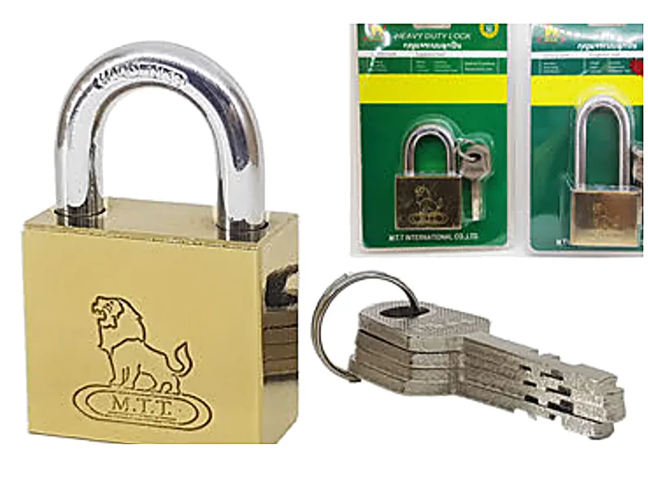
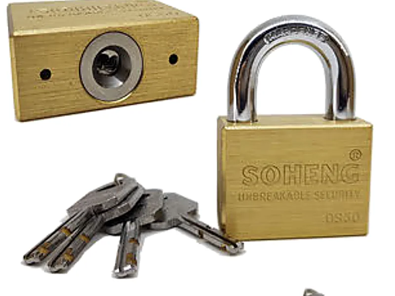
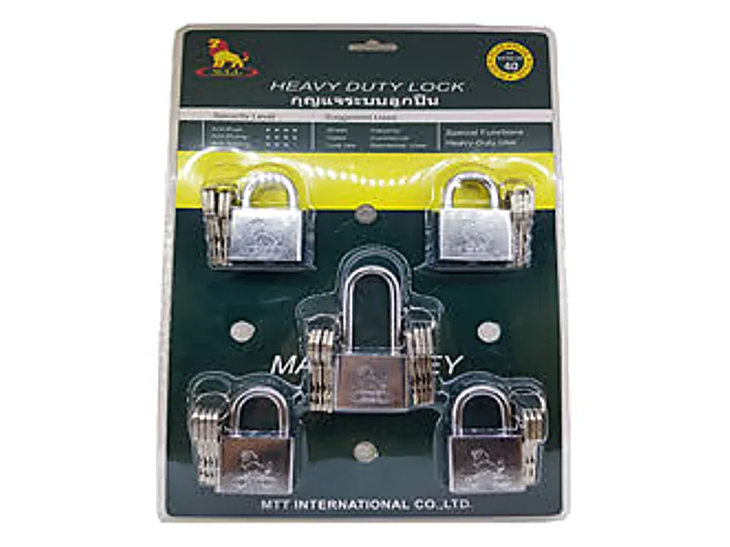
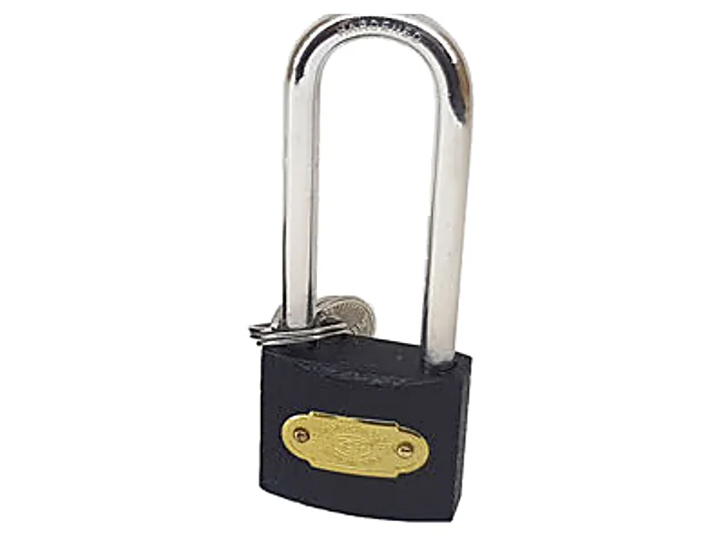

วิธีเลือกกุญแจคล้อง ขนาดไหน คอสั้นหรือคอยาว
กุญแจคล้องที่ดูเหมือนกันอาจต่างกันมาก ทั้งขนาด ความยาวคอ ระบบล็อก และวัสดุ บทความนี้อธิบายวิธีเลือกกุญแจคล้องให้เหมาะกับงาน ตัวเลขมิลบนกุญแจหมายถึงอะไร คอสั้นกับคอยาวต่างกันยังไง และกุญแจคีย์อะไลค์คืออะไร พร้อมรุ่นที่มีในแคตตาล็อกของร้าน
ตัวเลขมิลบนกุญแจคืออะไร
กุญแจคล้องเรียกขนาดเป็นมิลลิเมตรตามความกว้างของตัวกุญแจ เช่น 40 มม. คือตัวกุญแจกว้างราว 4 ซม. ยิ่งตัวใหญ่ หูกุญแจยิ่งหนาและกลไกข้างในยิ่งใหญ่ตาม ในแคตตาล็อกของร้านมีตั้งแต่ 20 มม. สำหรับตู้และกระเป๋า ไปจนถึง 63 มม. สำหรับประตูและโกดัง
ก่อนเลือกขนาด ให้ดูรูหรือห่วงที่จะคล้อง หูกุญแจต้องสอดผ่านได้พอดี ถ้าหูหนาเกินจะใส่ไม่เข้า ถ้าบางเกินไปเทียบกับห่วง ก็งัดหรือตัดได้ง่ายกว่าที่ควร
คอสั้นหรือคอยาว
รหัสที่ลงท้ายด้วย S คือคอสั้น ส่วน L คือคอยาว ทั้งสองแบบใช้ตัวกุญแจขนาดเดียวกัน ต่างกันที่ความสูงของหูกุญแจ
คอสั้น (S)
หูกุญแจโผล่ออกมาน้อย เหลือช่องให้สอดเครื่องมืองัดหรือกรรไกรตัดได้ยาก เหมาะกับห่วงประตู สายยู และตู้ที่ห่วงอยู่ชิดกัน
คอยาว (L)
หูกุญแจสูงกว่า คล้องผ่านโซ่เส้นใหญ่ ห่วงที่อยู่ห่างกัน หรือคล้องหลายห่วงพร้อมกันได้ ใช้เมื่อคอสั้นคล้องไม่ถึง
ระบบลูกปืนกับระบบสปริง
กลไกที่ล็อกหูกุญแจไว้ในตัวกุญแจมีสองแบบหลักในแคตตาล็อกของร้าน
ระบบลูกปืนคู่
ลูกปืนสองลูกล็อกหูกุญแจไว้ทั้งสองข้าง ดึงหรืองัดให้หลุดได้ยากกว่า กุญแจตระกูลสิงห์เงิน สิงห์ทอง และกุญแจทองเหลืองระบบลูกปืนคู่ใช้ระบบนี้ และแคตตาล็อกระบุว่ามีแผ่นแหวนป้องกันกุญแจผีกับหูกุญแจชุบแข็ง
ระบบสปริง
หูกุญแจถูกยึดด้วยสลักที่มีสปริงดัน เป็นกลไกพื้นฐานที่ใช้กันทั่วไป เหมาะกับงานทั่วไปในบ้านและร้านค้า เช่นกุญแจห่วงเหล็กสีดำ
ทองเหลืองแท้ เหล็กชุบ หรือเหล็ก
| วัสดุ | จุดเด่น | เหมาะกับ |
|---|---|---|
| ทองเหลืองแท้ | ทองเหลืองไม่มีเหล็กผสม จึงไม่เกิดสนิมแดงแบบเหล็ก ผิวอาจหมองลงตามเวลา | ที่ชื้น กลางแจ้ง ใกล้ทะเล ห้องน้ำ |
| เหล็กชุบทองเหลือง | ตัวเป็นเหล็ก ผิวชุบให้สวยและกันสนิม ถ้าผิวชุบถลอก เนื้อเหล็กด้านในขึ้นสนิมได้ | ในร่ม ตู้ ลิ้นชัก ประตูที่ไม่โดนฝน |
| เหล็กสีดำ | เหล็กพ่นสีหรือเคลือบผิว แข็งแรง ควรหยอดน้ำมันในรูกุญแจเป็นระยะ | งานทั่วไปในร่ม |


คีย์อะไลค์ ลูกเดียวไขได้หลายตัว
ถ้ามีหลายประตูหรือหลายตู้ที่คนเดียวกันต้องเปิด กุญแจแบบคีย์อะไลค์ช่วยให้ไม่ต้องพกพวงกุญแจใหญ่ ทุกตัวในชุดไขด้วยลูกกุญแจดอกเดียวกันได้ ชุดสิงห์เงิน M.T.T. คีย์อะไลค์มีทั้งชุด 3 ตัว (คอสั้น 2 คอยาว 1) และชุด 5 ตัว (คอสั้น 4 คอยาว 1) ขนาด 40 และ 50 มม. แคตตาล็อกระบุว่าแม่กุญแจแต่ละตัวมีลูกกุญแจ 4 ดอก และมีลูกกุญแจที่ไขได้ทุกตัวอีก 4 ดอก


เลือกตามงาน
| งาน | แนะนำ | เหตุผล |
|---|---|---|
| ตู้เก็บของ ล็อกเกอร์ กระเป๋า | 20–32 มม. คอสั้น | รูคล้องเล็ก ตัวกุญแจไม่เกะกะ |
| ประตูบ้าน ประตูรั้ว ร้านค้า | 40–50 มม. คอสั้น ระบบลูกปืน | หูหนาขึ้น และคอสั้นเหลือช่องให้สอดเครื่องมือน้อย |
| โซ่เส้นใหญ่ ห่วงอยู่ห่างกัน | คอยาว (L) ขนาดเท่ากับที่ใช้ประตู | คอสั้นคล้องไม่ถึง |
| กลางแจ้ง ที่ชื้น ใกล้ทะเล | ทองเหลืองแท้ | ตัวกุญแจไม่ขึ้นสนิมแบบเหล็ก |
| หลายประตู คนเปิดคนเดียว | ชุดคีย์อะไลค์ | ลูกกุญแจดอกเดียวไขได้ทุกตัว |
ดูแลกุญแจให้ใช้ได้นาน
กุญแจที่อยู่กลางแจ้งมักฝืดเพราะฝุ่นและความชื้นเข้าไปในรูกุญแจ หยอดน้ำมันหล่อลื่นชนิดบางเข้าไปในรูกุญแจและโคนหูกุญแจเป็นระยะ แล้วไขเข้าออกสองสามครั้งให้น้ำมันกระจาย ถ้าไขแล้วฝืด อย่าฝืนบิดแรง เพราะลูกกุญแจอาจหักคารู
ร้านค้าที่ซื้อไปขายต่อ ดูจำนวนต่อแพ็กและต่อลังของแต่ละรหัสได้ที่หน้ากุญแจคล้องทั้งหมด เช่น สิงห์เงินและสิงห์ทอง 30 มม. บรรจุ 12/144 และขนาด 50 มม. บรรจุ 12/72
คำถามที่ถามกันบ่อย
กุญแจ 40 มม. วัดตรงไหน
วัดความกว้างของตัวกุญแจ ไม่ใช่ความสูงหรือความหนาของหูกุญแจ
คอสั้นกับคอยาวต่างกันยังไง
ตัวกุญแจขนาดเท่ากัน ต่างกันที่ความสูงของหูกุญแจ คอสั้นงัดและตัดยากกว่า คอยาวคล้องโซ่ใหญ่หรือห่วงที่อยู่ห่างกันได้
กุญแจคีย์อะไลค์คืออะไร
กุญแจหลายตัวในชุดเดียวกันที่ไขได้ด้วยลูกกุญแจดอกเดียวกัน เหมาะกับคนที่ต้องเปิดหลายประตูหรือหลายตู้
กุญแจทองเหลืองเป็นสนิมไหม
ทองเหลืองไม่มีเหล็กผสม จึงไม่ขึ้นสนิมแดงแบบเหล็ก แต่ผิวอาจหมองหรือเปลี่ยนสีได้เมื่อใช้ไปนานๆ ส่วนหูกุญแจที่เป็นเหล็กชุบแข็งควรหยอดน้ำมันบ้าง
ซื้อยกโหลหรือยกลังได้ไหม
ได้ จำนวนต่อแพ็กและต่อลังอยู่ในหน้ากุญแจคล้อง ราคาไม่ได้ประกาศในเว็บ ส่งรหัสมาทาง LINE ทางร้านแจ้งราคาปลีกและราคาส่งให้
อ่านต่อ
ไม่แน่ใจว่าใช้กุญแจแบบไหน? ถามทาง LINE
ส่งรูปห่วงหรือประตูที่จะคล้องมา ทีมงานสำเพ็งแนะนำขนาดและรุ่นให้